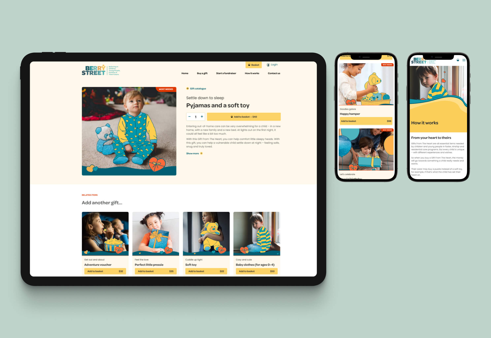
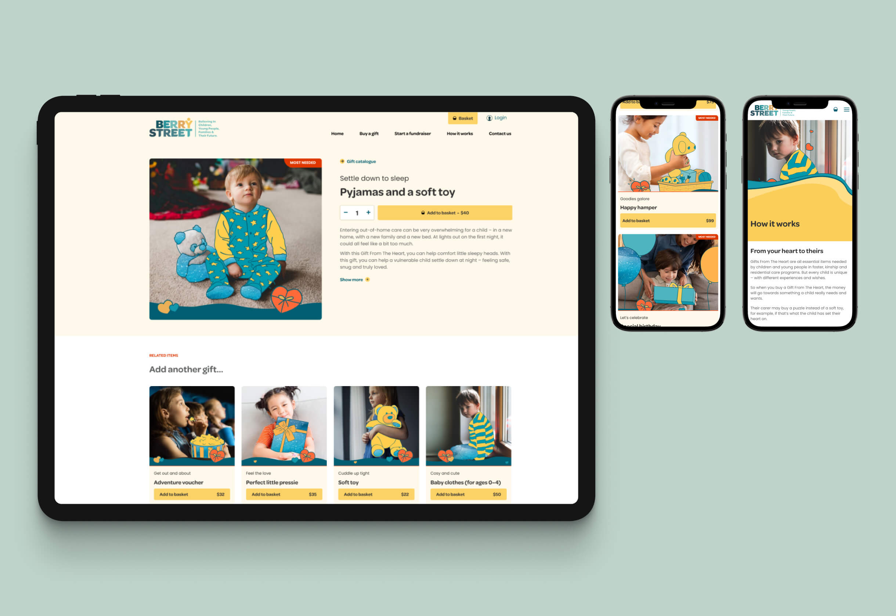

05 berry street
 

2022
UI Designer
Berry Street’s outdated Drupal 7 platform lacked key integrations with marketing automation and did not align with their website transformation strategy. The virtual gift catalogue needed a revamp to improve user engagement, conversion rates, and accessibility. To address this, we conducted research, workshops, and interviews to understand user needs and behaviours, creating personas, journey maps, and an intuitive information architecture. This discovery process informed a seamless and engaging gift-purchasing experience, encouraging donors to purchase multiple gifts and optimising the site for accessibility and conversion.
Berry Street’s outdated Drupal 7 platform lacked key integrations with marketing automation and did not align with their website transformation strategy. The virtual gift catalogue needed a revamp to improve user engagement, conversion rates, and accessibility. To address this, we conducted research, workshops, and interviews to understand user needs and behaviours, creating personas, journey maps, and an intuitive information architecture. This discovery process informed a seamless and engaging gift-purchasing experience, encouraging donors to purchase multiple gifts and optimising the site for accessibility and conversion.
*Not-for-profit winner at the Australian Web Awards.
Harry is a UX/UI designer who crafts intuitive, high-performance websites that align with business goals. With expertise in UX research, wireframing, prototyping, and UI design, he creates seamless, user-focused experiences.
His superpower is the ability to deeply understand business needs and translate them into effective design solutions, supported by a structured workflow. He is business-driven, with a strong focus on critical reviews, iteration, and design systems to ensure the delivery of high-quality design outcomes.